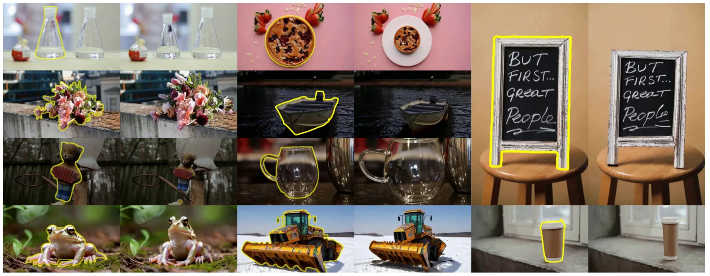
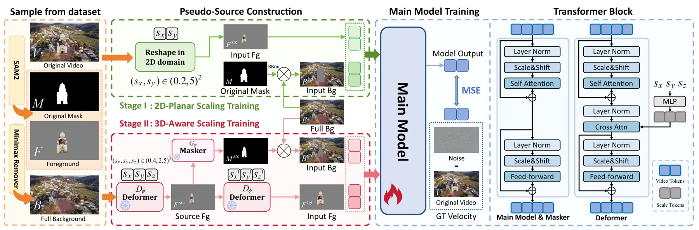
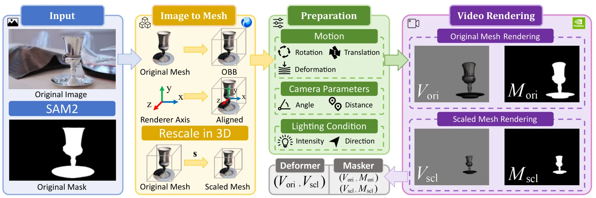
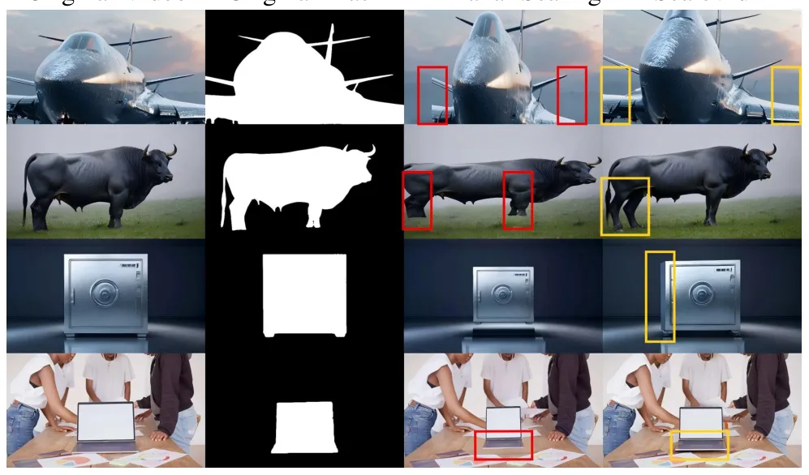
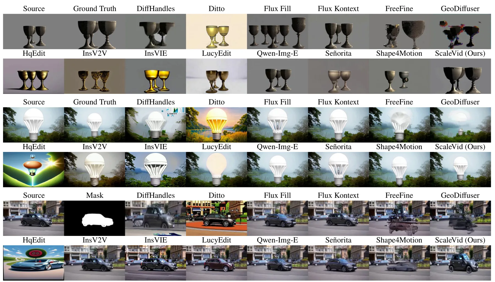
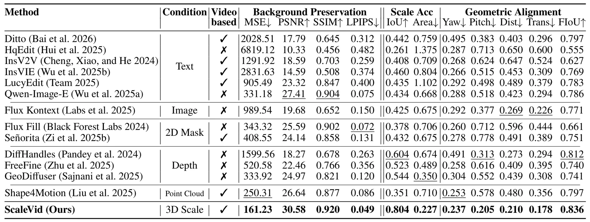
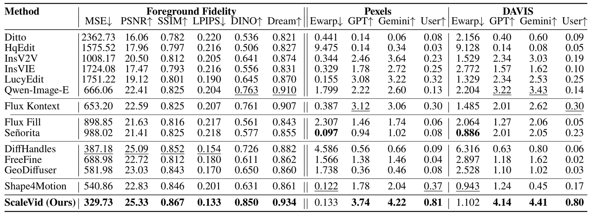
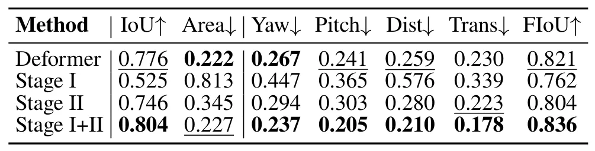
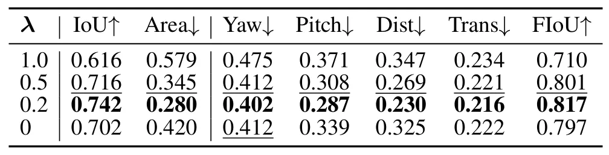

ScaleVid：无需 mesh 推理的几何感知视频对象缩放ScaleVid: Geometry-Aware Video Object Scaling with Mesh-Free Inference
包含对象中心三维变形与几何一致性问题，但主要贡献属于视频编辑/生成，与 SLAM、GNSS 和度量重建的直接关联有限。
一句话工作总结
以两阶段伪源重建训练学习对象中心三维变形，无需在推理时构建 mesh 或执行显式三维重建。
摘要
ScaleVid 研究沿 object-centric axes 对视频对象进行各向异性缩放，同时保持几何合理性、时间一致性和背景完整性。其渐进式两阶段训练先以平面变换学习稳健的前景—背景合成，再引入 object-centric 3D deformation guidance 学习几何感知缩放。两个阶段都从真实视频构造几何扰动 pseudo-sources，并保留原始完整视频作为 reconstruction targets，因此无需成对的真实缩放数据。推理阶段不依赖 mesh-pixel alignment 或显式三维重建。摘要称其在配对几何、真实背景及野外视频评测中优于现有方法，并比显式重建方法更快。
Geometry-aware video object scaling aims to anisotropically resize the object along object-centric axes while preserving geometric plausibility, temporal coherence, and background consistency. Existing text-guided methods mainly operate in the 2D image plane, while depth-guided approaches provide coarse control and mesh-based methods require costly 3D reconstruction. We present a progressive two-stage training framework that decouples geometry-aware foreground transformation from background preservation and realistic video composition, without mesh-pixel alignment and explicit 3D reconstruction at inference. In both stages, geometrically perturbed pseudo-sources are constructed from real videos, while the original complete videos are retained as reconstruction targets. The first stage uses planar transformations to learn robust foreground-background composition, whereas the second introduces object-centric 3D deformation guidance for geometry-aware scaling. This pseudo-source reconstruction formulation enables real-video synthesis without paired real-world scaling targets. We construct complementary paired-geometry and real-background benchmarks and further evaluate on in-the-wild videos. Extensive experiments demonstrate superior geometric consistency, foreground fidelity, and background preservation, together with faster and more practical inference than methods requiring explicit 3D reconstruction.
中文解读摘录
- 价值：尝试沿 object-centric axes 对视频目标做各向异性缩放，同时保持几何合理性、时间一致性与背景完整性；推理阶段不要求显式三维重建或 mesh-pixel alignment。
- 方法：两阶段渐进训练先学习前景变换和背景合成，再加入 object-centric 3D deformation guidance；两阶段都从真实视频构造几何扰动 pseudo-sources，并以原视频作为 reconstruction targets。
- 关注点：与 SLAM/度量重建关系较弱，主要是视频生成方向。应检查所谓 3D guidance 是否维持真实多视图几何、快速推理的硬件与分辨率条件，以及对相机运动、遮挡和拓扑变化的鲁棒性。
- 链接：arXiv · PDF
图表/页面预览
{kind=link}

{kind=link}

{kind=link}

{kind=link}

{kind=link}

{kind=link}

{kind=link}

{kind=link}

{kind=link}
